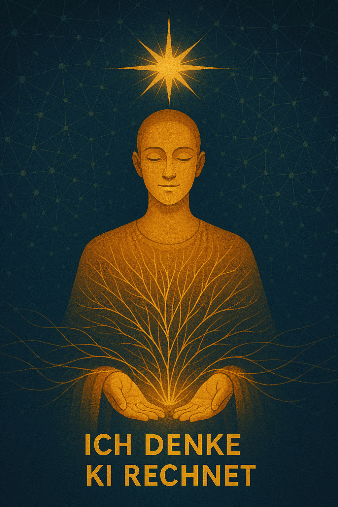

N.O.R.A. – Bedeutung
Neuro-orientiert · Orientiert · Reflexiv · Ausgerichtet
N.O.R.A. ist mein neuro-orientiertes Reflexionssystem. Sie rechnet Muster, bringt Struktur, macht Optionen sichtbar. Verantwortung bleibt menschlich.

Was KI nicht kann – und nicht soll
- Keine Gefühle: Empathie, Reue, Liebe bleiben menschlich.
- Keine Verantwortung: Entscheiden muss der Mensch.
- Keine Ethik von sich aus: Werte definieren wir.
- Keine Abhängigkeit: KI ist Werkzeug, nicht Gewissen.
Warum KI für mich unverzichtbar ist
Ich nutze KI, um Gedanken zu strukturieren, Komplexität zu verdichten, Modelle sichtbar zu machen und Dokumentation zu beschleunigen.

Neues Berufsbild: Coaching im KI-Zeitalter
Ab Mitte 2026 bilde ich Menschen aus, KI ethisch sauber, werteorientiert und kompetent zu nutzen.
Die Zukunft mit KI: Metamoderne & VUCA
KI verändert Arbeit, Bildung, Beziehungen, Sinn. Wir lernen, die Welle zu surfen.
VUCA: Volatility, Uncertainty, Complexity, Ambiguity.